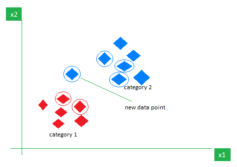
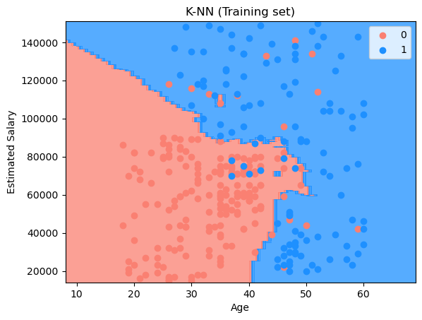

import numpy as np
import pandas as pdWhat is Classification
Classification is a supervised machine learning model that can predict the correct “label” of a given input data. Model is fully trained with the given dataset and corresponding label to it.
In this section, we build a model that can predict that a customer gonna purchase our product with its age and estimated salary. So, in this model, age and estimated salary gonna be an input data, and purchase gonna be a label.
K-Nearest Neighbors algorithm
K-Nearest Neighbors (KNN) is one of the most basic classification algorithm. In the classification phase, a user defines a hyper-parameter “k” which is the number of nearest data of each points. Simply, the model predicts which label is assigned to the input data by looking “k” nearest points of the input data.

In the figure above, k is 5. So, the new data point looks for 5 nearest points and predicts that is is blue label.
Importing the libraries and dataset
dataset = pd.read_csv('../dataset/Social_Network_Ads.csv')
dataset| Age | EstimatedSalary | Purchased | |
|---|---|---|---|
| 0 | 19 | 19000 | 0 |
| 1 | 35 | 20000 | 0 |
| 2 | 26 | 43000 | 0 |
| 3 | 27 | 57000 | 0 |
| 4 | 19 | 76000 | 0 |
| ... | ... | ... | ... |
| 395 | 46 | 41000 | 1 |
| 396 | 51 | 23000 | 1 |
| 397 | 50 | 20000 | 1 |
| 398 | 36 | 33000 | 0 |
| 399 | 49 | 36000 | 1 |
400 rows × 3 columns
As stated above, our dataset, “Social Network Ads” contains 400 data of customers age, estimated salary, and wheather they purchased or not.
Now, we split our dataset into train and test set as we done in regression model.
X = dataset.iloc[:, :-1].values
y = dataset.iloc[:, -1].valuesfrom sklearn.model_selection import train_test_split
X_train, X_test, y_train, y_test = train_test_split(X, y, test_size=1/4, random_state=0)Feature Scaling
As we seen in dataset, we have two input data includes age and estimated salary. Although age is ranged between 10 to 90, estimated salary is ranged between 10000 to 40000; the scale of two inputs are different.
So, we need to do feature scaling of these data into the range between [-2.0 to 2.0]. StandardScaler library in sklearn will be helpful to handle this.
from sklearn.preprocessing import StandardScaler
sc = StandardScaler()
X_train = sc.fit_transform(X_train)
X_test = sc.transform(X_test)X_trainarray([[ 0.58164944, -0.88670699],
[-0.60673761, 1.46173768],
[-0.01254409, -0.5677824 ],
[-0.60673761, 1.89663484],
[ 1.37390747, -1.40858358],
[ 1.47293972, 0.99784738],
[ 0.08648817, -0.79972756],
[-0.01254409, -0.24885782],
[-0.21060859, -0.5677824 ],
[-0.21060859, -0.19087153],
[-0.30964085, -1.29261101],
[-0.30964085, -0.5677824 ],
[ 0.38358493, 0.09905991],
[ 0.8787462 , -0.59677555],
[ 2.06713324, -1.17663843],
[ 1.07681071, -0.13288524],
[ 0.68068169, 1.78066227],
[-0.70576986, 0.56295021],
[ 0.77971394, 0.35999821],
[ 0.8787462 , -0.53878926],
[-1.20093113, -1.58254245],
[ 2.1661655 , 0.93986109],
[-0.01254409, 1.22979253],
[ 0.18552042, 1.08482681],
[ 0.38358493, -0.48080297],
[-0.30964085, -0.30684411],
[ 0.97777845, -0.8287207 ],
[ 0.97777845, 1.8676417 ],
[-0.01254409, 1.25878567],
[-0.90383437, 2.27354572],
[-1.20093113, -1.58254245],
[ 2.1661655 , -0.79972756],
[-1.39899564, -1.46656987],
[ 0.38358493, 2.30253886],
[ 0.77971394, 0.76590222],
[-1.00286662, -0.30684411],
[ 0.08648817, 0.76590222],
[-1.00286662, 0.56295021],
[ 0.28455268, 0.07006676],
[ 0.68068169, -1.26361786],
[-0.50770535, -0.01691267],
[-1.79512465, 0.35999821],
[-0.70576986, 0.12805305],
[ 0.38358493, 0.30201192],
[-0.30964085, 0.07006676],
[-0.50770535, 2.30253886],
[ 0.18552042, 0.04107362],
[ 1.27487521, 2.21555943],
[ 0.77971394, 0.27301877],
[-0.30964085, 0.1570462 ],
[-0.01254409, -0.53878926],
[-0.21060859, 0.1570462 ],
[-0.11157634, 0.24402563],
[-0.01254409, -0.24885782],
[ 2.1661655 , 1.11381995],
[-1.79512465, 0.35999821],
[ 1.86906873, 0.12805305],
[ 0.38358493, -0.13288524],
[-1.20093113, 0.30201192],
[ 0.77971394, 1.37475825],
[-0.30964085, -0.24885782],
[-1.6960924 , -0.04590581],
[-1.00286662, -0.74174127],
[ 0.28455268, 0.50496393],
[-0.11157634, -1.06066585],
[-1.10189888, 0.59194336],
[ 0.08648817, -0.79972756],
[-1.00286662, 1.54871711],
[-0.70576986, 1.40375139],
[-1.29996338, 0.50496393],
[-0.30964085, 0.04107362],
[-0.11157634, 0.01208048],
[-0.30964085, -0.88670699],
[ 0.8787462 , -1.3505973 ],
[-0.30964085, 2.24455257],
[ 0.97777845, 1.98361427],
[-1.20093113, 0.47597078],
[-1.29996338, 0.27301877],
[ 1.37390747, 1.98361427],
[ 1.27487521, -1.3505973 ],
[-0.30964085, -0.27785096],
[-0.50770535, 1.25878567],
[-0.80480212, 1.08482681],
[ 0.97777845, -1.06066585],
[ 0.28455268, 0.30201192],
[ 0.97777845, 0.76590222],
[-0.70576986, -1.49556302],
[-0.70576986, 0.04107362],
[ 0.48261718, 1.72267598],
[ 2.06713324, 0.18603934],
[-1.99318916, -0.74174127],
[-0.21060859, 1.40375139],
[ 0.38358493, 0.59194336],
[ 0.8787462 , -1.14764529],
[-1.20093113, -0.77073441],
[ 0.18552042, 0.24402563],
[ 0.77971394, -0.30684411],
[ 2.06713324, -0.79972756],
[ 0.77971394, 0.12805305],
[-0.30964085, 0.6209365 ],
[-1.00286662, -0.30684411],
[ 0.18552042, -0.3648304 ],
[ 2.06713324, 2.12857999],
[ 1.86906873, -1.26361786],
[ 1.37390747, -0.91570013],
[ 0.8787462 , 1.25878567],
[ 1.47293972, 2.12857999],
[-0.30964085, -1.23462472],
[ 1.96810099, 0.91086794],
[ 0.68068169, -0.71274813],
[-1.49802789, 0.35999821],
[ 0.77971394, -1.3505973 ],
[ 0.38358493, -0.13288524],
[-1.00286662, 0.41798449],
[-0.01254409, -0.30684411],
[-1.20093113, 0.41798449],
[-0.90383437, -1.20563157],
[-0.11157634, 0.04107362],
[-1.59706014, -0.42281668],
[ 0.97777845, -1.00267957],
[ 1.07681071, -1.20563157],
[-0.01254409, -0.13288524],
[-1.10189888, -1.52455616],
[ 0.77971394, -1.20563157],
[ 0.97777845, 2.07059371],
[-1.20093113, -1.52455616],
[-0.30964085, 0.79489537],
[ 0.08648817, -0.30684411],
[-1.39899564, -1.23462472],
[-0.60673761, -1.49556302],
[ 0.77971394, 0.53395707],
[-0.30964085, -0.33583725],
[ 1.77003648, -0.27785096],
[ 0.8787462 , -1.03167271],
[ 0.18552042, 0.07006676],
[-0.60673761, 0.8818748 ],
[-1.89415691, -1.40858358],
[-1.29996338, 0.59194336],
[-0.30964085, 0.53395707],
[-1.00286662, -1.089659 ],
[ 1.17584296, -1.43757673],
[ 0.18552042, -0.30684411],
[ 1.17584296, -0.74174127],
[-0.30964085, 0.07006676],
[ 0.18552042, 2.09958685],
[ 0.77971394, -1.089659 ],
[ 0.08648817, 0.04107362],
[-1.79512465, 0.12805305],
[-0.90383437, 0.1570462 ],
[-0.70576986, 0.18603934],
[ 0.8787462 , -1.29261101],
[ 0.18552042, -0.24885782],
[-0.4086731 , 1.22979253],
[-0.01254409, 0.30201192],
[ 0.38358493, 0.1570462 ],
[ 0.8787462 , -0.65476184],
[ 0.08648817, 0.1570462 ],
[-1.89415691, -1.29261101],
[-0.11157634, 0.30201192],
[-0.21060859, -0.27785096],
[ 0.28455268, -0.50979612],
[-0.21060859, 1.6067034 ],
[ 0.97777845, -1.17663843],
[-0.21060859, 1.63569655],
[ 1.27487521, 1.8676417 ],
[-1.10189888, -0.3648304 ],
[-0.01254409, 0.04107362],
[ 0.08648817, -0.24885782],
[-1.59706014, -1.23462472],
[-0.50770535, -0.27785096],
[ 0.97777845, 0.12805305],
[ 1.96810099, -1.3505973 ],
[ 1.47293972, 0.07006676],
[-0.60673761, 1.37475825],
[ 1.57197197, 0.01208048],
[-0.80480212, 0.30201192],
[ 1.96810099, 0.73690908],
[-1.20093113, -0.50979612],
[ 0.68068169, 0.27301877],
[-1.39899564, -0.42281668],
[ 0.18552042, 0.1570462 ],
[-0.50770535, -1.20563157],
[ 0.58164944, 2.01260742],
[-1.59706014, -1.49556302],
[-0.50770535, -0.53878926],
[ 0.48261718, 1.83864855],
[-1.39899564, -1.089659 ],
[ 0.77971394, -1.37959044],
[-0.30964085, -0.42281668],
[ 1.57197197, 0.99784738],
[ 0.97777845, 1.43274454],
[-0.30964085, -0.48080297],
[-0.11157634, 2.15757314],
[-1.49802789, -0.1038921 ],
[-0.11157634, 1.95462113],
[-0.70576986, -0.33583725],
[-0.50770535, -0.8287207 ],
[ 0.68068169, -1.37959044],
[-0.80480212, -1.58254245],
[-1.89415691, -1.46656987],
[ 1.07681071, 0.12805305],
[ 0.08648817, 1.51972397],
[-0.30964085, 0.09905991],
[ 0.08648817, 0.04107362],
[-1.39899564, -1.3505973 ],
[ 0.28455268, 0.07006676],
[-0.90383437, 0.38899135],
[ 1.57197197, -1.26361786],
[-0.30964085, -0.74174127],
[-0.11157634, 0.1570462 ],
[-0.90383437, -0.65476184],
[-0.70576986, -0.04590581],
[ 0.38358493, -0.45180983],
[-0.80480212, 1.89663484],
[ 1.37390747, 1.28777882],
[ 1.17584296, -0.97368642],
[ 1.77003648, 1.83864855],
[-0.90383437, -0.24885782],
[-0.80480212, 0.56295021],
[-1.20093113, -1.5535493 ],
[-0.50770535, -1.11865214],
[ 0.28455268, 0.07006676],
[-0.21060859, -1.06066585],
[ 1.67100423, 1.6067034 ],
[ 0.97777845, 1.78066227],
[ 0.28455268, 0.04107362],
[-0.80480212, -0.21986468],
[-0.11157634, 0.07006676],
[ 0.28455268, -0.19087153],
[ 1.96810099, -0.65476184],
[-0.80480212, 1.3457651 ],
[-1.79512465, -0.59677555],
[-0.11157634, 0.12805305],
[ 0.28455268, -0.30684411],
[ 1.07681071, 0.56295021],
[-1.00286662, 0.27301877],
[ 1.47293972, 0.35999821],
[ 0.18552042, -0.3648304 ],
[ 2.1661655 , -1.03167271],
[-0.30964085, 1.11381995],
[-1.6960924 , 0.07006676],
[-0.01254409, 0.04107362],
[ 0.08648817, 1.05583366],
[-0.11157634, -0.3648304 ],
[-1.20093113, 0.07006676],
[-0.30964085, -1.3505973 ],
[ 1.57197197, 1.11381995],
[-0.80480212, -1.52455616],
[ 0.08648817, 1.8676417 ],
[-0.90383437, -0.77073441],
[-0.50770535, -0.77073441],
[-0.30964085, -0.91570013],
[ 0.28455268, -0.71274813],
[ 0.28455268, 0.07006676],
[ 0.08648817, 1.8676417 ],
[-1.10189888, 1.95462113],
[-1.6960924 , -1.5535493 ],
[-1.20093113, -1.089659 ],
[-0.70576986, -0.1038921 ],
[ 0.08648817, 0.09905991],
[ 0.28455268, 0.27301877],
[ 0.8787462 , -0.5677824 ],
[ 0.28455268, -1.14764529],
[-0.11157634, 0.67892279],
[ 2.1661655 , -0.68375498],
[-1.29996338, -1.37959044],
[-1.00286662, -0.94469328],
[-0.01254409, -0.42281668],
[-0.21060859, -0.45180983],
[-1.79512465, -0.97368642],
[ 1.77003648, 0.99784738],
[ 0.18552042, -0.3648304 ],
[ 0.38358493, 1.11381995],
[-1.79512465, -1.3505973 ],
[ 0.18552042, -0.13288524],
[ 0.8787462 , -1.43757673],
[-1.99318916, 0.47597078],
[-0.30964085, 0.27301877],
[ 1.86906873, -1.06066585],
[-0.4086731 , 0.07006676],
[ 1.07681071, -0.88670699],
[-1.10189888, -1.11865214],
[-1.89415691, 0.01208048],
[ 0.08648817, 0.27301877],
[-1.20093113, 0.33100506],
[-1.29996338, 0.30201192],
[-1.00286662, 0.44697764],
[ 1.67100423, -0.88670699],
[ 1.17584296, 0.53395707],
[ 1.07681071, 0.53395707],
[ 1.37390747, 2.331532 ],
[-0.30964085, -0.13288524],
[ 0.38358493, -0.45180983],
[-0.4086731 , -0.77073441],
[-0.11157634, -0.50979612],
[ 0.97777845, -1.14764529],
[-0.90383437, -0.77073441],
[-0.21060859, -0.50979612],
[-1.10189888, -0.45180983],
[-1.20093113, 1.40375139]])Training the KNN model
Now, we train our KNN model with training dataset.
from sklearn.neighbors import KNeighborsClassifier
classifier = KNeighborsClassifier(n_neighbors = 5, metric = 'minkowski', p = 2)
classifier.fit(X_train, y_train)KNeighborsClassifier()In a Jupyter environment, please rerun this cell to show the HTML representation or trust the notebook.
On GitHub, the HTML representation is unable to render, please try loading this page with nbviewer.org.
KNeighborsClassifier()
print(classifier.predict(sc.transform([[30,87000]])))[0]With our trained KNN model, we can predict a specific customer whose age is 30 and estimated salary is 87000 gonna purchase our product. Our model predicts that he don’t purchase our product.
Making the Confusion Matrix
Also, we can see how accurate our model is with the confusion matrix provided by sklearn.
from sklearn.metrics import confusion_matrix, accuracy_score
y_pred = classifier.predict(X_test)
cm = confusion_matrix(y_test, y_pred)
print(cm)
accuracy_score(y_test, y_pred)[[64 4]
[ 3 29]]0.93By compareing our predicted test set result and actual result, we can get a accuracy score.
Our model shows that it is 93 percent correct in our test set.
Visualising the results
import matplotlib.pyplot as plt
from matplotlib.colors import ListedColormap
X_set, y_set = sc.inverse_transform(X_train), y_train
X1, X2 = np.meshgrid(np.arange(start = X_set[:, 0].min() - 10, stop = X_set[:, 0].max() + 10, step = 1),
np.arange(start = X_set[:, 1].min() - 1000, stop = X_set[:, 1].max() + 1000, step = 1))
plt.contourf(X1, X2, classifier.predict(sc.transform(np.array([X1.ravel(), X2.ravel()]).T)).reshape(X1.shape),
alpha = 0.75, cmap = ListedColormap(('salmon', 'dodgerblue')))
plt.xlim(X1.min(), X1.max())
plt.ylim(X2.min(), X2.max())
for i, j in enumerate(np.unique(y_set)):
plt.scatter(X_set[y_set == j, 0], X_set[y_set == j, 1], c = ListedColormap(('salmon', 'dodgerblue'))(i), label = j)
plt.title('K-NN (Training set)')
plt.xlabel('Age')
plt.ylabel('Estimated Salary')
plt.legend()
plt.show()C:\Users\ASUS\AppData\Local\Temp\ipykernel_31324\1813449438.py:12: UserWarning: *c* argument looks like a single numeric RGB or RGBA sequence, which should be avoided as value-mapping will have precedence in case its length matches with *x* & *y*. Please use the *color* keyword-argument or provide a 2D array with a single row if you intend to specify the same RGB or RGBA value for all points.
plt.scatter(X_set[y_set == j, 0], X_set[y_set == j, 1], c = ListedColormap(('salmon', 'dodgerblue'))(i), label = j)
from matplotlib.colors import ListedColormap
X_set, y_set = sc.inverse_transform(X_test), y_test
X1, X2 = np.meshgrid(np.arange(start = X_set[:, 0].min() - 10, stop = X_set[:, 0].max() + 10, step = 1),
np.arange(start = X_set[:, 1].min() - 1000, stop = X_set[:, 1].max() + 1000, step = 1))
plt.contourf(X1, X2, classifier.predict(sc.transform(np.array([X1.ravel(), X2.ravel()]).T)).reshape(X1.shape),
alpha = 0.75, cmap = ListedColormap(('salmon', 'dodgerblue')))
plt.xlim(X1.min(), X1.max())
plt.ylim(X2.min(), X2.max())
for i, j in enumerate(np.unique(y_set)):
plt.scatter(X_set[y_set == j, 0], X_set[y_set == j, 1], c = ListedColormap(('salmon', 'dodgerblue'))(i), label = j)
plt.title('K-NN (Test set)')
plt.xlabel('Age')
plt.ylabel('Estimated Salary')
plt.legend()
plt.show()